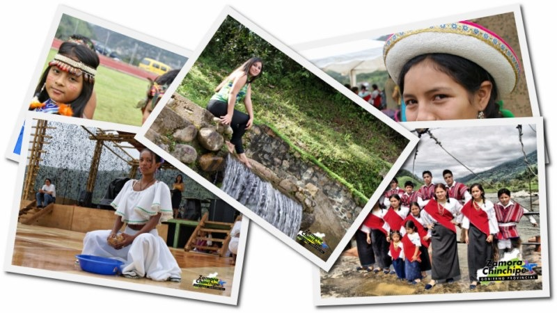

Fiestas patronales:Cada parroquia o cantón de Zamora Chinchipe celebra con gran devoción a
su santo patrono. Estas festividades incluyen misas solemnes, procesiones
por las calles decoradas, danzas folklóricas, presentaciones musicales con grupos
locales y comidas tradicionales que reúnen a toda la comunidad.
Carnaval:El carnaval en Zamora es una fiesta colorida y alegre, donde se organizan
juegos con agua, desfiles de comparsas, música y actividades recreativas.
Se acompaña de platos típicos como el maito de pescado, el caldo de corroncho,
y bebidas tradicionales.
Rondas y coplas Shuar: El pueblo Shuar mantiene viva su memoria histórica y cultural a través de
rondas,cantos, coplas y relatos que se transmiten oralmente de generación
en generación.Estas expresiones forman parte de su identidad, enseñan valores,
cosmovisión y acontecimientos importantes de su pueblo.

Traje típico Shuar:Durante celebraciones, festivales y eventos culturales, los hombres y
mujeres Shuar visten sus trajes tradicionales. Estos incluyen prendas hechas a mano,
collares de semillas, plumas y pinturas corporales con diseños simbólicos, que
reflejan su conexión espiritual con la naturaleza.
Ceremonias ancestrales:Las comunidades indígenas practican rituales espirituales utilizando
plantas medicinales como parte de su sabiduría ancestral. Estas ceremonias,guiadas
por chamanes o sabios, buscan armonizar el cuerpo y el espíritu, curar enfermedades y
pedir protección a los espíritus de la selva y la madre tierra.